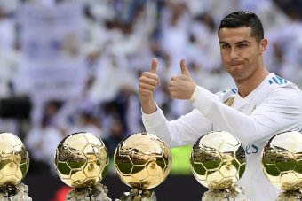
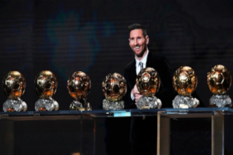

Os Melhores Jogadores da historia
Depois de muita burocracia e muita discussão, varios jornalisas se juntaram e fizeram uma votação para chegar em uma lista final dos melhores jogadores que atuaram no última decada no futebol mundial.
E depois de muita pesquisa e horas e horas de videos assistidos, lances, jogadas, defesas, assistencias e gols, finalmente chegamos em uma lista final.
Confira a lista abaixo:
- Messi
- Cristiano Ronaldo
- Neymar
- Suarez
- Nuer
- Ramos
- Salah
Nós da equipe da fanaticos, queriamos frizzar que Messi e Cristiano Ronaldo estão em outro nivel, outro patamar.
Visando isso, não seria justo comparar meros jogadores humanos com essas duas lendas.

Nessa imagem, vemos cristiano ronaldo com posando para a foto com sua QUINTA bola de ouro

Nesta, vemos o jogador com mais bolas de ouro em atividade do mundo. Lionel Messi, com 7 bolas de ouro